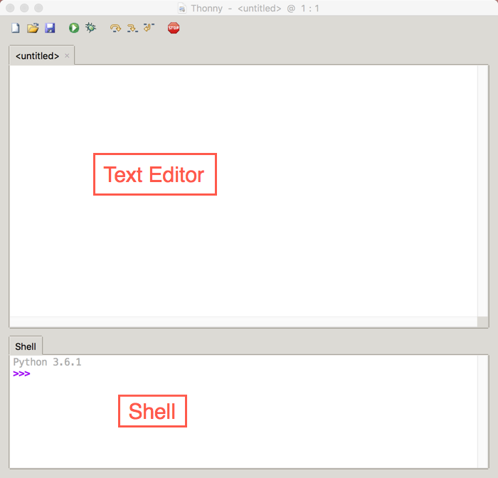

1. Quick Python Overview¶
CS20-CP1 Apply various problem-solving strategies to solve programming problems throughout Computer Science 20.
CS20-FP1 Utilize different data types, including integer, floating point, Boolean and string, to solve programming problems.
CS20-FP2 Investigate how control structures affect program flow.
Note
In today’s quick exploration of Python, you will see some things that you do not understand. That is okay. We will go into each of the ideas in much more detail as the semester progresses, but it is really helpful to see a large overview before we get into the details of each section.
If you’d prefer to watch a video describing some important features of Python, the following video demonstrates the same ideas as what I’ve described in text below.
1.1. What is Python?¶
Python is a programming language that lets you teach the computer to do what you want. You’ve already been writing Python programs using Reeborg. Everything you have already learned (with the exception of repeat), works in regular Python. Using regular Python allows us to start exploring other ways our programs can produce output, and take input.
1.2. Running Python on Your Computer¶
There are many different ways to install Python on your computer (in fact, some version of Python might already be installed on your computer). However, one of the easiest ways to get Python working on your computer (Windows, Mac or Linux) is to download Thonny. Go download Thonny now. It doesn’t require administrative rights to install, so you should be able to install it in your school computer lab (double check with your teacher that they are okay with this first!). You may want to install Thonny at home as well.
For each of the code segments that you see on this page, you can either run them directly in your web browser OR you can copy/paste the code into Thonny to run it.
When using Thonny, you need to understand the difference between the text editor and the shell (also known as the interpreter). If you want to save your code to use again later, you should type your code into the text editor, which will prompt you to save your file somewhere on disk when you press the Run Current Script button (or press F5). The output of your code will show up in the shell (underneath the text editor). You can also type in any Python code you’d like into the shell, which is a handy way to try out new things in Python.
1.3. Whitespace¶
Just like when you were programming Reeborg, it is really important to indent your code correctly in Python. For example, the code given below will cause a syntax error when you click the Run button. Click the Run button to see the error. Now, can you figure out how to fix it? Edit the code, then click Run again to see if you’ve fixed it!
1.4. Printing Output¶
As you saw in the example above, you can print() things to standard output (usually the Python console/interpreter). The print() function will be used in many of the examples that follow. Note that print() can take any number of arguments, separated by commas. So you could print something like this: print("Monday", "Tuesday", "Wednesday"), which would print Monday Tuesday Wednesday, with each argument separated by a space.
Note
There are lots of other ways that a program can produce output, like drawing, turning on LEDs, etc. We will investigate some of these later in the course.
1.5. Variables and Data Types¶
You hopefully remember using variables to keep track of things when we were using Scratch. For example, we used a variable called number of sides when we began to draw regular polygons. In Python, we can create variables as well. In the example above, we made a variable called some_number. We have to be careful how we name variables, since they can’t be keywords like if, not, etc. A keyword is a word that already has a special meaning in Python. Variables should start with a letter, and if they contain more than one word, you should put an underscore between the words (like helpful_variable or something_else).
The fundamental data types that we are concerned about in Python include:
int (integer, such as
3or-5)float (floating point number, such as
1.2or-4.75)str (string, such as
"hello"or'Friday'or"5")bool (boolean, such as
TrueorFalse)
We will use each of the data types given above throughout the course, and it is really important that you understand the differences between them. Take a moment now to try the following questions.
Check Your Understanding
- boolean
- It is not True or False.
- integer
- The data is not numeric.
- float
- The value is not numeric with a decimal point.
- string
- Great! Strings are enclosed in quotes.
quick-overview3: What is the data type of 'this is what kind of data'?
- boolean
- It is not True or False.
- integer
- Great! The data is numeric, without a decimal point.
- float
- The value is not numeric with a decimal point.
- string
- Strings are enclosed in quotes.
quick-overview4: What is the data type of 3?
- boolean
- Great! Boolean is either True or False.
- integer
- The data is not numeric.
- float
- The value is not numeric with a decimal point.
- string
- Strings are enclosed in quotes.
quick-overview5: What is the data type of True?
- boolean
- It is not True or False.
- integer
- The data is not numeric.
- float
- Great! The value is numeric with a decimal point.
- string
- Strings are enclosed in quotes.
quick-overview6: What is the data type of 1.5?
1.6. Checking Data Types¶
If you aren’t sure what the data type of something is, you can check it using the type() function. This works on both values (a piece of data) and variables (a container that holds a value). What will the code below do? After you have pressed Run below, change the value inside the type() function to make sure you really understand what it is doing. Replace the 5 with 5.3. What do you get? How about "5.3"?
1.7. Converting Between Data Types¶
Sometimes you might need to convert from one data type to another. You can use the following functions to type cast data:
str(x)to convert x to a stringint(x)to convert x to an integerfloat(x)to convert x to a floating point number
1.8. Math Operators¶
We can do math with Python, but we need to know the operators to use. The following table shows the most frequently used math operators in Python.
Symbols |
Operations |
Example |
Output |
|---|---|---|---|
+ |
Addition |
|
3 |
- |
Subtraction |
|
1 |
* |
Multiplication |
|
4 |
/ |
Division |
|
2.5 |
// |
Truncating Division (quotient) |
|
2 |
% |
Modulo (remainder) |
|
1 |
** |
Power |
|
25 |
1.9. if¶
The if control structure works the same way it did with Reeborg. Run the example given below. What happens if you change it to number = 23. How about number = 10?
Note
A single equal sign = is used to assign a value. Two equal signs == are used when comparing a value.
1.10. if/elif/else¶
The if/elif/else control structure works in the exact same way it did when you were programming Reeborg. The important thing to remember is that only one of the branches can execute. Read the code below, and predict what you think the output will be. Then change it to temp = 25. What will the output be now? How about if you change it to temp = 5? What about temp = 15?
1.11. while loop¶
Recall that we used a while loop in Reeborg when we didn’t know the number of iterations ahead of time. In other words, the body of while will be repeated as long as the controlling boolean expression evaluates to True. Run the code below. Can you change the code so that it counts up from 1 to 10, then says “Here I come!”?
1.12. for loop¶
When we knew the exact number of iterations required in Reeborg, we used the repeat command. That command was not part of regular Python – it was added to keep Reeborg coding as simple as possible. Although I won’t explain all the details about it yet, I will introduce you to the Python version of a repeat loop. If we want something to repeat 10 times, we could do the following: (after running the code, change the 10 to some other number and try it again)
Notice that the loop above repeats 10 times, but begins counting at 0, so the last number is a 9. We can control the for loop even more by passing two arguments, like this:
1.13. Lists¶
How does the range function above work? What it does is create a list of numbers, which allows us to save more than one value into the same variable. For example, when we called range(5, 11) above, Python created a list with the numbers 5, 6, 7, 8, 9, 10. If we had wanted to create that list ourselves, we could have done something like this:
number_list = [5, 6, 7, 8, 9, 10]
We can put any data type inside of the list, so it would also be okay to make a list like:
number_list = [5, "happy", 2.5, True]
If we create our own list, we can still iterate through it using a for loop. For example, if you were keeping track of which groceries you wanted to buy at the store, you might put all the items you want to buy into a list, then print out each of them.
If you want to access just one element inside a list, you can specify the location of the element you want. For example, if we wanted to access the carrots from the grocery_list above, we could ask for the 1th element (since we start counting from 0). We enclose the location inside square brackets, so to access the carrots we would call grocery_list[1].
1.14. Functions¶
Just like you were able to teach Reeborg to do new things by creating a new function, we can create new functions in Python as well. Here are a couple examples:
1.15. Taking Input from User¶
If you want the user to type something, you can use the input() function. Here are a couple examples:
Note
input() will always return a string. You will need to convert it to an int or a float if you are expecting a number.
The following example is not going to work when you try to run it. Try entering in 16, then 15. Notice that nothing is printed either time, even though it looks like the conditional should be causing it to print. Can you figure out what is wrong and fix it? Hint: think about data types!
1.16. Python Modules¶
One of the great things about Python is that there are a lot of modules that extend the basic functionality of Python. A module is simply a file (or folder) containing Python functions and variables. You have created your own module when you were exploring Reeborg. When you typed from library import turn_right, you made the turn_right function defined in the library tab available to your program. Consider the following ways you can use to import modules in Python.
1.17. Number Guessing Game¶
Remember the number guessing game we created in Scratch? The basic premise was as follows:
generates a random number from 1 to 100 and stores it in a variable
repeats the following until the user guesses the number
gets the user to guess the number (using the ask block)
tells the user if the number is too high or too low
congratulates the user when they guess the correct number with a message such as “Way to go! You guessed the right number in 9 tries!”
We are going to try to implement this game in Python. Please note: you will likely run into many problems trying to create this game in Python. However, it can be really helpful to try problems that feel like they are above your skill level. Soon, you will be able to create programs like this on your own! Your teacher might choose to give you some time to try this on your own, then demonstrate a possible solution to the problem, or perhaps come back to this game in a couple of weeks.